Version 0.1.5, an early milestone build
The Windows control center that respects your machine
Task Manager, System Informer, Autoruns, a debloater and a tweak engine, unified into one native WinUI 3 app. Deep monitoring, safe configuration and premium Windows-native design, treated as equally important.
Windows 10 build 19041 or newer, 64-bit. Unsigned, so SmartScreen will ask first.
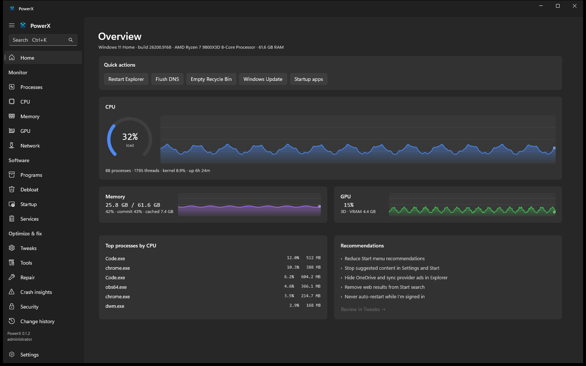
What it does
Not another debloater
PowerX stays useful even if you never remove a single app. Six areas, one codebase. The CLI and the desktop app call the exact same engine.
Monitor
CPU total, per-core and kernel time. Memory: physical, commit, pools, cache. GPU engines and VRAM via PDH. Network throughput and live connections. Processes from a single syscall, with a real tree.
Configure
A declarative, evidence-backed tweak engine. Every tweak states what it does, why, the downside, restart needs and whether it is reversible. No folklore gamer tweaks.
Debloat
About ninety curated entries, Store and consumer apps only, no shell components, nothing pre-selected. Each entry states its removal class and how hard it is to reinstall.
Clean and repair
Size-first disk cleanup with a per-category breakdown, and a runner for SFC, DISM, chkdsk, network reset and Windows Update repair with streamed output.
Safety
Detect, record, plan, show, apply, verify, log, undo. An append-only change history. Per-tweak revert. Honest about what cannot be undone.
Understand
Plain-language explanations, deterministic recommendations, crash insights built from what Windows already recorded, and a Learn section that debunks common myths.
Processes
See where the weight actually is
One NtQuerySystemInformation call per tick gives per-process CPU, disk I/O,
working set, handles and threads, with no per-process handle storm. Resource-heat
shading and a hog bar surface the heavy processes at a glance. Drag the columns, freeze the
list, and keep sorting while it is frozen.
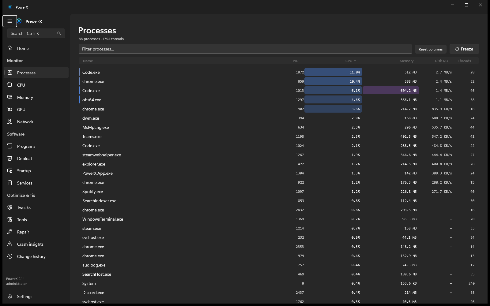
Configure
Curated profiles, applied with a visible diff
Recommended, Privacy, Potato mode, Gaming, Restore defaults. Each applies a named set in one click after showing you exactly what will change. Every item stays individually reversible, and nothing that weakens a security boundary is ever in a default profile.
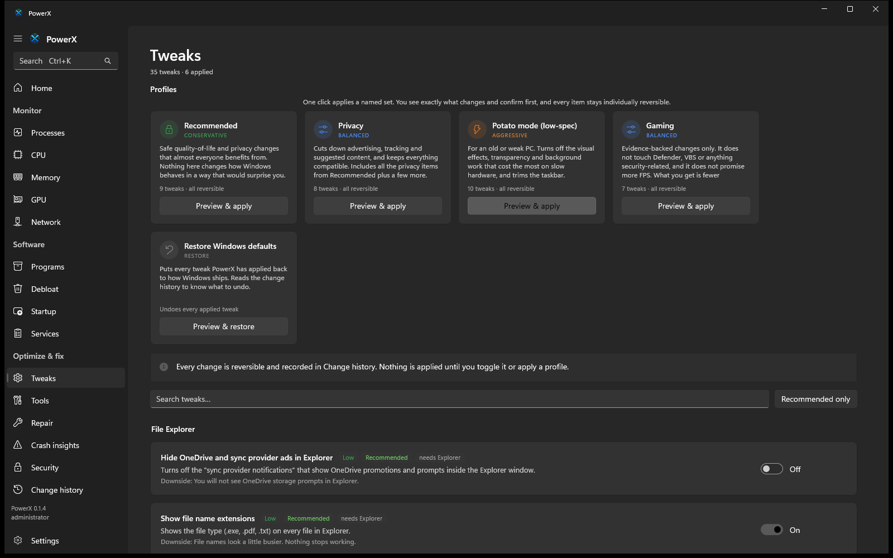
Crash insights
Read what Windows already wrote down
PowerX reads the Windows Error Reporting store, the Application and System event logs, and, only if you ask and only as administrator, the metadata inside a crash dump. It never downloads symbols, never opens a dump in a debugger, and never uploads anything. Each report keeps the observed facts separate from what PowerX thinks they mean, and lists what is missing instead of guessing.
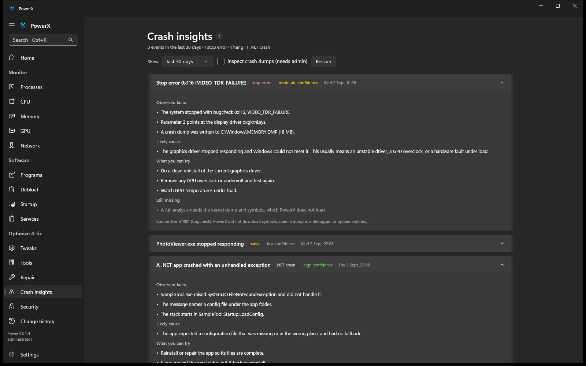
Startup
Know what is slowing your boot
Every autostart location in one list, toggled the safe way Task Manager does it. On top of that, PowerX reads the boot-performance data Windows already records and shows how long the last boot took, how that compares to your recent average, and a High, Medium or Low impact tag on the entries Windows measured as slow. It shows the real numbers, and says nothing where there is nothing to show.
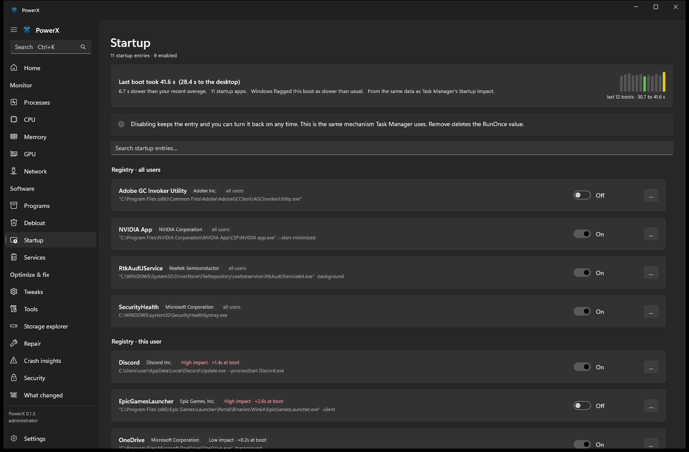
What changed
Answer "my PC got weird lately"
About once a day PowerX takes a quiet snapshot of your configuration: startup entries, scheduled tasks, auto-start services, installed programs, signed drivers and the tweaks it has applied. Then it shows you the difference between any two, so a new startup entry, a driver bump or a program you do not remember installing has a name and a date. It all stays on your PC.
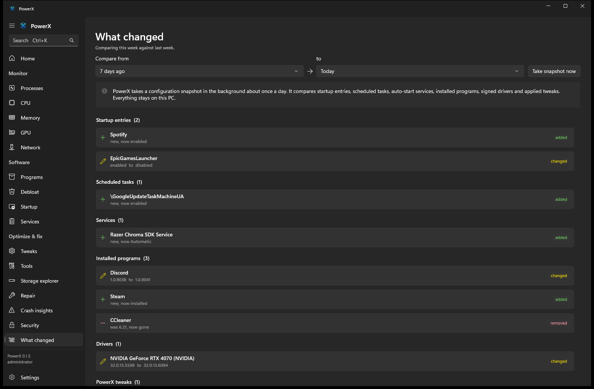
Network
See what your machine is talking to
Live up and down rate, per-process connections with remote address and state, and a listening-ports view that flags anything reachable from the network rather than just loopback. Reverse DNS is opt-in and only ever runs for public addresses, so nothing phones out unless you ask. Ping, traceroute and DNS lookups are built in.
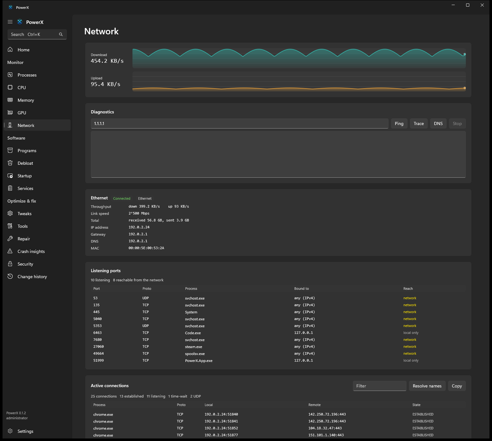
Storage explorer
Find where the space went
Point it at a drive or a folder and it sizes every sub-folder, largest first, so you can walk straight to the 40 GB you forgot about. Junctions and symlinks are skipped so nothing is counted twice. Then open the folder in Explorer, or keep drilling.
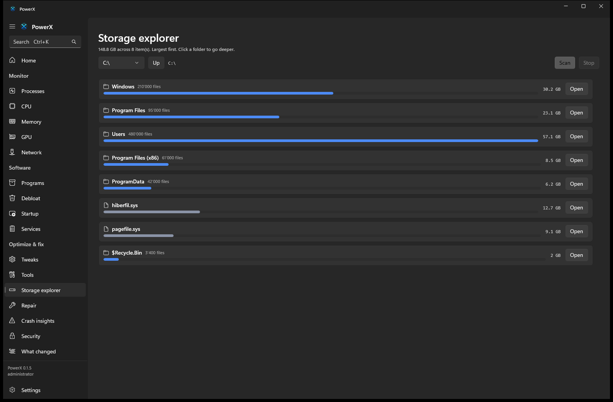
Security
Not an antivirus. A window onto the one you have.
PowerX will never be your antivirus, because a half-working one you trust instead of Defender is worse than none. What it does: show Defender's real status, list the threats it has already caught, start a scan, and check any file's SHA-256 against CIRCL hashlookup, a free open database of known files. Only the hash is sent, and only when you click.
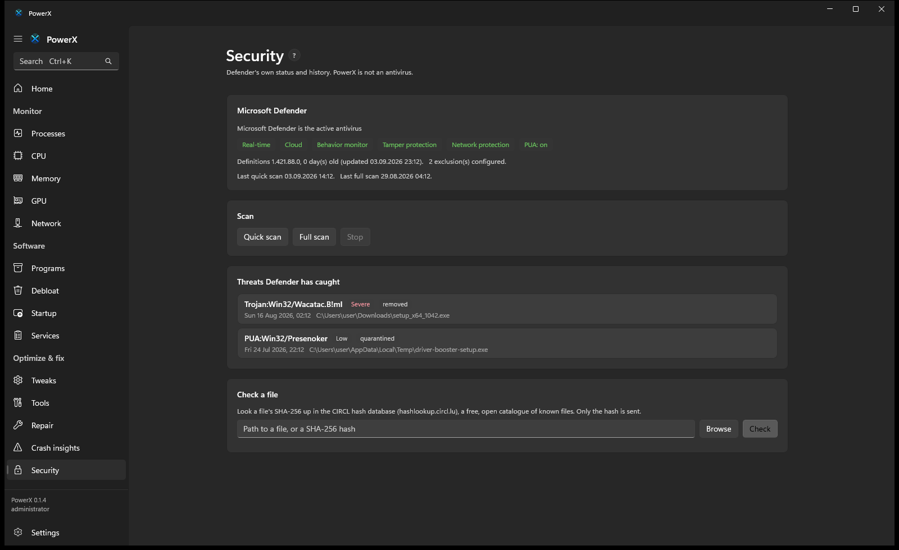
Scheduled tasks
Turn off the tasks you never asked for
Every scheduled task in one place, with PowerX's position on the well-known ones: the telemetry and reporting tasks you can safely turn off, the third-party updaters that mean updating that app yourself, and the Windows components it leaves alone. Turning a task off is fully reversible and never deletes it.
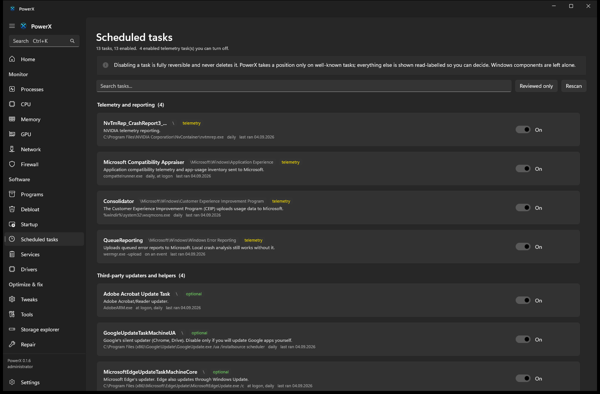
Firewall & drivers & the event log
More windows onto what Windows knows
A read-only view of the firewall rules that flags a broad inbound hole somebody punched. A driver inventory that calls out the ones three or more years old, or unsigned. And a friendlier event log that groups recent errors by source and adds a plain-language note for the ones people actually worry about. PowerX changes none of it.
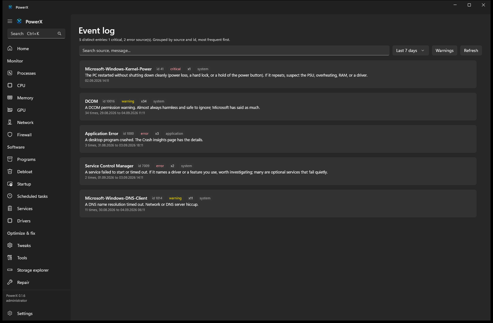
Same engine, no GUI required
Drive it from the terminal
The powerx CLI and the desktop app share PowerX.Core. Tweak logic is
never duplicated between them.
# build from source (.NET 10) git clone https://github.com/Nowalski/Power-X && cd Power-X dotnet build dotnet run --project src/PowerX.Cli -- status dotnet run --project src/PowerX.Cli -- process list --sort cpu --top 20 dotnet run --project src/PowerX.Cli -- scan dotnet run --project src/PowerX.Cli -- tweak show privacy.advertising-id dotnet run --project src/PowerX.Cli -- profile apply lowspec --dry-run dotnet run --project src/PowerX.Cli -- crashes --since 7d dotnet run --project src/PowerX.Cli -- report --print dotnet run --project src/PowerX.Cli -- security dotnet run --project src/PowerX.Cli -- hash C:\Windows\System32\curl.exe dotnet run --project src/PowerX.Cli -- tasks --telemetry dotnet run --project src/PowerX.Cli -- drivers --old dotnet run --project src/PowerX.Cli -- firewall dotnet run --project src/PowerX.Cli -- events --24h dotnet run --project src/PowerX.Cli -- config export my-setup.json
Safety is a feature
Safer than the debloater you are thinking of
The rules PowerX holds itself to, written into the spec, enforced in the code, checked by tests.
- Weakening a security boundary (Defender, SmartScreen, UAC, VBS) is never labelled Recommended and never in a default profile.
- No
irm | iex, no downloaded mystery binaries, no arbitrary Defender exclusions. - Every applied change is written to an append-only history and is individually reversible.
- No piracy, KMS or licence-bypass functionality. Ever.
- Nothing queries Windows faster than once per second, and sampling runs off the UI thread.
- Tweaks cite evidence. Claims that do not survive scrutiny do not ship.
Download
Get PowerX 0.1.5
64-bit Windows 10 (build 19041) or Windows 11. PowerX runs as administrator because it manages system state. It is not code-signed yet, so Windows SmartScreen will show an "unknown publisher" prompt: choose More info, then Run anyway.
Installer (recommended)
A single MSI. Installs to Program Files, adds one Start-menu entry, and updates in place when a new version ships. No desktop shortcut.
Download the installerPortable
A zip you can unpack and run anywhere, including a USB stick. Nothing is written outside its own folder except the change history in your profile.
Download the portable zip
Every release lists a SHA-256 for each file. To check the installer:
Get-FileHash .\PowerX-Setup-0.1.5-win-x64.msi in PowerShell, and compare it to
the value on the releases page.
Built in the open
PowerX is early. The Core library, the CLI and the WinUI app all work today on real Windows data. Follow along, file issues, or build it yourself.
Star it on GitHub